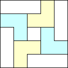
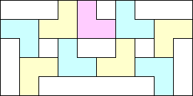
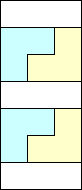
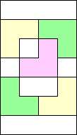
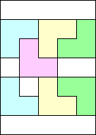
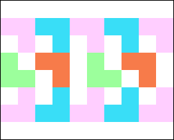
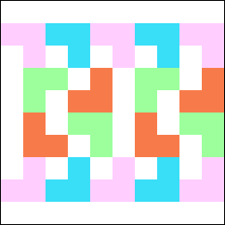

mn/3
mn/3 L's will fit, unless m=3 and n is odd, in which case only (mn/3 – 1) L's will fit. This is based on tiling most rectangles using 2×3 rectangles and the 5×9 rectangle below:
L's will fit, unless m=3 and n is odd, in which case only (mn/3 – 1) L's will fit. This is based on tiling most rectangles using 2×3 rectangles and the 5×9 rectangle below:Problem #1: How many L's will fit in an n×m rectangle?
Problem #2: How few L's can we put in an n×m rectangle so that no more will fit?
Problem #3: How few L's can we put in an n×m rectangle so that none of them can slide?
Problem #4: Two players take turns placing L's into an n×m rectangle, and whoever places the last one wins. Which player has the winning strategy?
Joseph DeVincentis and Philippe Fondanaiche completely solved this problem. When m or n is less than 2, clearly no L's will fit. Otherwise, mn/3 L's will fit, unless m=3 and n is odd, in which case only (mn/3 – 1) L's will fit. This is based on tiling most rectangles using 2×3 rectangles and the 5×9 rectangle below:
Brendan Owen gave some partial results, handling the cases when m or n is less than 2, and mn divisible by 6.
Let F(n,m) be the fewest L's that can be placed in a n×m rectangle so that no more will fit. Also, let R(n) be the limit of F(n,m)/mn as m → ∞.
Joseph DeVincentis and Philippe Fondanaiche conjectured the following bounds. DeVincentis managed to prove these conjectures for n≤3.
| n | F(n,m) | R(n) |
|---|---|---|
| 1 | 0 | 0 |
| 2 | (2m+5)/5 | 1/5 |
| 3 | (m+1)/2 | 1/6 |
| 4 | 2(m+1)/3 | 1/6 |
| 5 | m–1 | 1/5 |
| 6 | m | 1/6 |
| 7 | (5m+2)/4 | 5/28 |
| 8 | (3m–1)/2 | 3/16 |
| 9 | (5m+2)/3 | 5/27 |
| 10 | 2m–1 | 1/5 |
| 11 | 2m | 2/11 |
| 12 | (9n+2)/4 | 3/16 |
The 5×n and 7×n bounds are only good for large n. The 5×n results are based on extending the packings below:
|  |  |
The 7×7 is the only other rectangle (besides the 5×5) found that requires less than area/6 L's:
The 7×n results are based on joining one of these ends to repeated 7×4 rectangles:
|  |  |  |
Recently, Sasha Ravsky proved that R(n) → 2/11 as n → ∞. The tiling showing the upper bound is shown below. To see the lower bound, consider an m×n rectangle containing r rectangles so that no more will fit. There are four different 2×2 grids in the plane, so at least one of them contains at least p ≥ r/4 L's of the tiling. The rectangle contains at least k=(m–2)(n–2)/4 2×2 grid squares, and each 2×2 square must contain at least 2 unit squares of an L. Hence p + (2/3)(k–p) ≤ r or r ≥ (2/11)k.
He notes that this construction gives R(n) ≥ (2n–2)/(11n) for odd n. He modifies the construction to show that R(2n) ≥ 1/6, proving the values for R(4) and R(6). He also gives figures showing R(5) ≤ 8/45, R(8) ≤ 7/40, and R(10) ≤ 9/50. (He also showed R(5) ≥ 3/20.)
 |  |  |
Let S(n,m) be the smallest number of non-sliding L's that will fit inside an n×m rectangle.
Philippe Fondanaiche found S(n,n)=S(n,n–1)=n–1, and many generalizations of this, not all correct.
I can prove that S(n,2) =  n/2
n/2 and S(n,3) = 2n/3. It appears that S(n,4) = 3n/4, and in general S(n,m) = (m–1)n/m for n much larger than m.
and S(n,3) = 2n/3. It appears that S(n,4) = 3n/4, and in general S(n,m) = (m–1)n/m for n much larger than m.
Here are the best known answers for small n and m:
| m \ n | 2 | 3 | 4 | 5 | 6 | 7 | 8 | 9 | 10 |
|---|---|---|---|---|---|---|---|---|---|
| 2 | 1 | 2 | 2 | 3 | 3 | 4 | 4 | 5 | 5 |
| 3 | 2 | 2 | 3 | 4 | 4 | 5 | 6 | 6 | 7 |
| 4 | 2 | 3 | 3 | 4 | 5 | 6 | 6 | 7 | 8 |
| 5 | 3 | 4 | 4 | 4 | 5 | 7 | 7 | 8 | 8 |
| 6 | 3 | 4 | 5 | 5 | 5 | 6 | 9 | 9 | 9 |
| 7 | 4 | 5 | 6 | 7 | 6 | 6 | 7 | 11 | 12 |
| 8 | 4 | 6 | 6 | 7 | 9 | 7 | 7 | 8 | 13 |
| 9 | 5 | 6 | 7 | 8 | 9 | 11 | 8 | 8 | 9 |
| 10 | 5 | 7 | 8 | 8 | 9 | 12 | 13 | 9 | 9 |
This game is an impartial combinatorial game, so each position has a nim value, which is 0 if and only if the position is a second player win.
| m \ n | 2 | 3 | 4 | 5 | 6 | 7 |
|---|---|---|---|---|---|---|
| 2 | 1 | 2 | 0 | 3 | 1 | 0 |
| 3 | 2 | 0 | 1 | 2 | 2 | 1 |
| 4 | 0 | 1 | 0 | 1 |
Here are the winning moves from the 3×n and 4×n rectangles with a first player win:
Let R(n) be the nim value of an n×2 rectangle, let L(n) be the nim value of an n×2 rectangle with an extra square attached on one side, and let S(n) be the nim value of an n×2 rectangle with an extra square attached on both sides.
| n | 1 | 2 | 3 | 4 | 5 | 6 | 7 | 8 | 9 | 10 | 11 | 12 | 13 | 14 | 15 | 16 | 17 | 18 | 19 | 20 |
|---|---|---|---|---|---|---|---|---|---|---|---|---|---|---|---|---|---|---|---|---|
| R(n) | 0 | 1 | 2 | 0 | 3 | 1 | 0 | 4 | 3 | 3 | 0 | 7 | 1 | 4 | 0 | 3 | 1 | 0 | 0 | 1 |
| L(n) | 1 | 1 | 2 | 2 | 3 | 1 | 0 | 5 | 1 | 6 | 0 | 7 | 1 | 4 | 2 | 3 | 6 | 4 | 0 | 1 |
| S(n) | 1 | 1 | 0 | 2 | 1 | 4 | 0 | 5 | 1 | 2 | 0 | 1 | 1 | 0 | 2 | 3 | 4 | 4 | 0 | 1 |
Is there some pattern here? What about for 3×n rectangles?
If you can extend any of these results, please e-mail me. Click here to go back to Math Magic. Last updated 3/14/05.